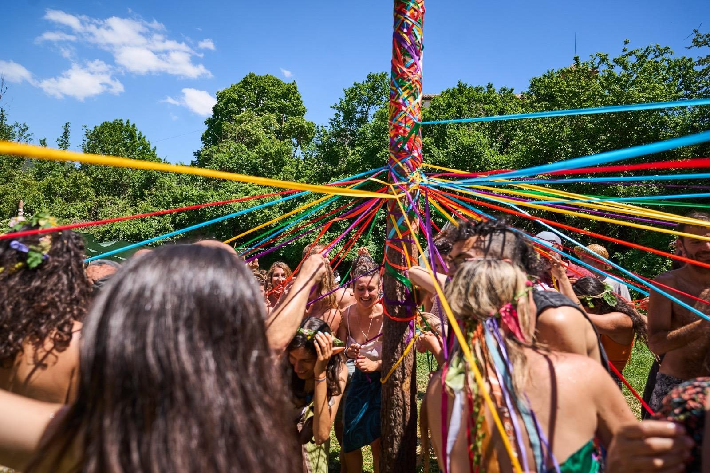

Voluntariat
Voluntariat
Aprendre fent
Vine a aprendre fent: aixopluga't a la masia, treballa la terra, participa en els tallers i forma part de la comunitat. Oferim allotjament i els àpats compartits a canvi d'unes hores de feina al dia.
No cal experiència prèvia, només ganes i respecte pel lloc i les persones.
Apunta-t'hi
Com funciona
Conta'ns qui ets, què t'agradaria fer i quines dates tens al cap.
T'expliquem la casa, les normes de convivència i la feina dels primers dies.
Treballem junts, cuinem junts i deixem el lloc una mica millor que com l'hem trobat.
Espai sense alcohol ni fum, vida compartida i molt per aprendre. Escriu-nos i ho parlem.
Vull ser voluntari/a